#10175 Red Riding - Yorkshire Killer 1974
Alternativ: Red Riding: The Year of Our Lord 1974 (Englischer Titel)
Auszeichnungen: 3 BAFTA-Awards gewonnen


 IMDB-Wertung: 7.1 / 10
IMDB-Wertung: 7.1 / 10  Metascore: 0
Metascore: 0 
Yorkshire 1974: ein kleines Kind wurde entführt, die Eltern sind verzweifelt. Der junge Polizeireporter Eddie Dunford erspürt einen ganz großen Fall, als er Parallelen zu zwei anderen Kindsmorden zieht. Doch sein Chef ist von dem Thema nicht begeistert, die Polizei legt sich auf Zigeuner als Entführer fest und bügelt ihn grob ab. Doch ein junger und leicht paranoider Kollege bringen ihn auf eine andere Idee, als das ländliche Roma-Lager in einer Nacht komplett zerstört wird. Dahinter stecken jedoch ganz andere Interessen, hauptsächlich die des Halbwelt-Selfmade-Man John Dawson, der auf dem Gelände des Lagers eine Shopping Mall errichten will. Als die Leiche des Kindes gefunden wird, streckt Eddie seine Fühler in alle Richtungen aus, doch die Gegenseite antwortet mit Drohungen und nackter Gewalt. Das Netz aus Korruption, Bestechung und politischem Kalkül zieht sich um ihn zusammen...
Jahr: 2009
Dauer: 105 Minuten
FSK: 16
Land: England Studio: Kinowelt Home EntertainmentTonspuren: DTS - ,
Untertitel: Deutsch,
Auflösung: 1080p (1920x1040) Größe: 7577 MB
Genre: Thriller, Drama, Krimi, Mystery
Regisseur: Julian Jarrold
Drehbuch: David Peace, Tony Grisoni
Soundtrack: Adrian Johnston
Darsteller:
- Andrew Garfield als Eddie Dunford
- 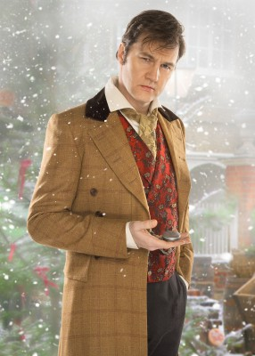 David Morrissey als Maurice Jobson
- Anthony Flanagan als Barry Gannon
- 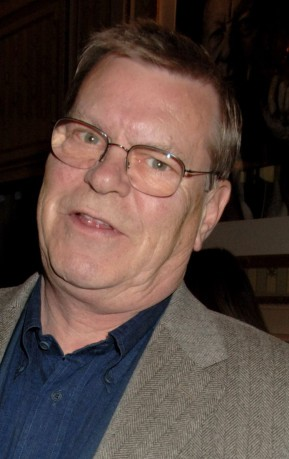 Warren Clarke als Bill Molloy
- Jennifer Hennessy als Mrs Kemplay
- Berwick Kaler als George Greaves
- 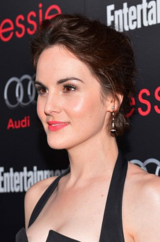 Michelle Dockery als Kathryn Tyler
- 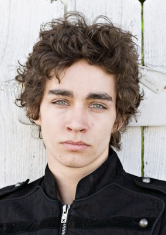 Robert Sheehan als BJ
 Eddie Marsan als Jack Whitehead
Eddie Marsan als Jack Whitehead- 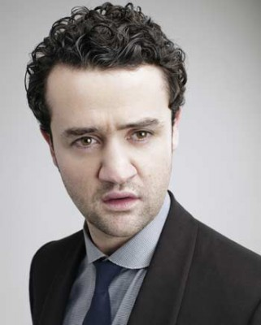 Daniel Mays als Michael Myshkin
 Cara Seymour als Mary Cole
Cara Seymour als Mary Cole Peter Mullan als Martin Laws
Peter Mullan als Martin Laws Gerard Kearns als Leonard Cole
Gerard Kearns als Leonard Cole- 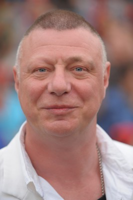 Ian Mercer als Paul Booker
- Rebecca Hall als Paula Garland
- 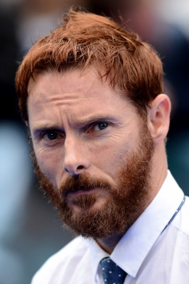 Sean Harris als Bob Craven
- 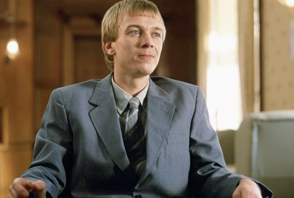 Steven Robertson als Sgt. Bob Fraser
- Liz Hume Dawson als Staff Nurse
- Cathryn Bradshaw als Marjorie Dawson
 Sean Bean als John Dawson
Sean Bean als John Dawson- 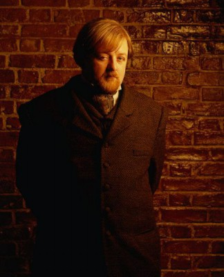 Roger Morlidge als Court Clerk
- Mike Mitchell als Henchman
- 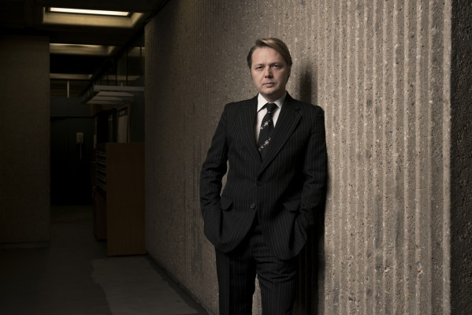 Shaun Dooley als Dick Alderman
 Brendan McCoy als Gypsy (uncredited)
Brendan McCoy als Gypsy (uncredited)- 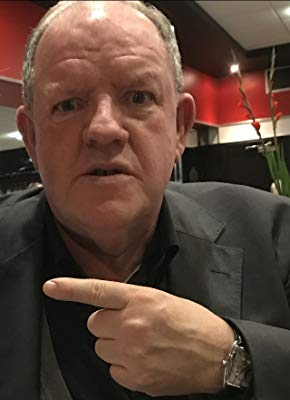 John Henshaw als Bill Hadley
- Mary Jo Randle als Eddie's Mum
- Rachel Jane Allen als Susan Dunford
- Rita May als Aunty Win
- Graham Walker als Uncle Eric
- Katherine Vasey als Steph
- Danny Cunningham als Gaz
- Margaret Blakemore als Rochdale's Neighbour
- Tony Mooney als Tommy Douglas
- Lynn Roden als Bet
- Chris Walker als Jim Prentice
- Kelly Freemantle als Clare Strachan
- Stewart Ross als Mr. Kemplay
- Molly Howe als Gypsy (uncredited)
Datei: X:\3-Trilogie(N-Z)\Red Riding - Yorkshire Killer\Red Riding - Yorkshire Killer 1974 (2009, FSK16, 1920x1040).mkv seit 16.12.2018
Festplatte: HD Collection-3(N-Z)-6(A-Z)
 Alle Filme aus Gruppe '3-Trilogie(N-Z)\Red Riding - Yorkshire Killer'
Alle Filme aus Gruppe '3-Trilogie(N-Z)\Red Riding - Yorkshire Killer'